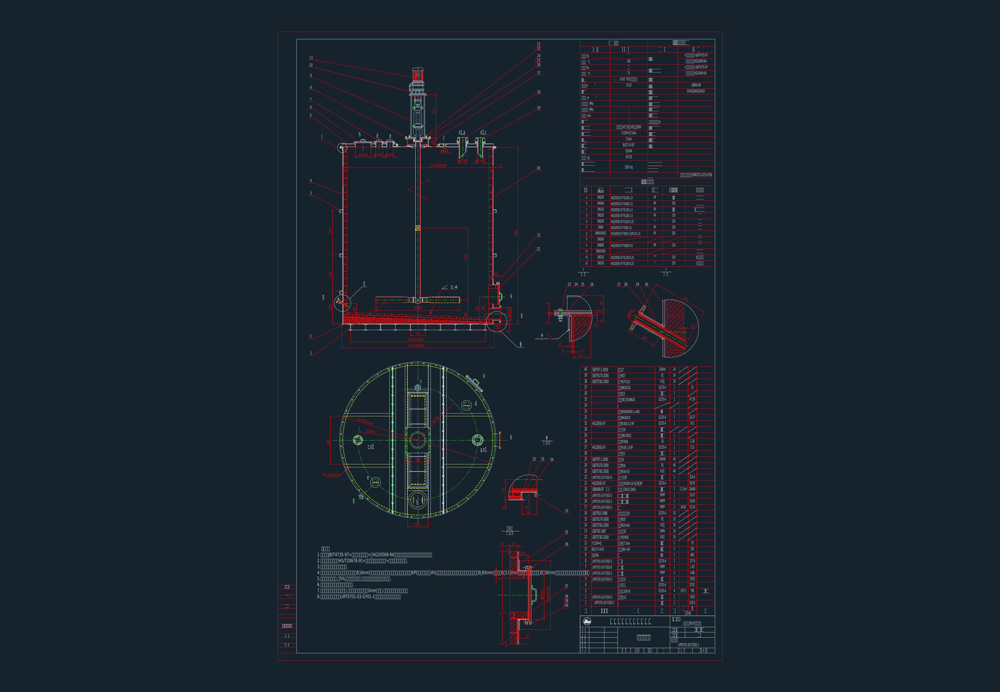

模型 · 量测与句柄 · 安装表 · 支承/空间复核 · 1.0保留版
偏钛酸缓冲槽 F41B01 · 2.0-F41B01-01
外部本体/接口、基础配合与安装复核；不展开内部工艺构造
新总图增加150高底型钢；模型以型钢下表面Z0，底板与槽体上移，基础承托位置不动
型钢高度/500间距有图示；未标截面仅显示，不能用于结构承载
搅拌总高2310保持，内部叶轮与盘管不展开；m检视窗细部待核
未标盖板厚、法兰厚和管外径系列为显示值；不得据此制造
各单台设备的工艺绝对方位待核；不凭文字插点新增位置
原始图纸、1.0、先前八类、建筑/桥架及原土建几何保持
